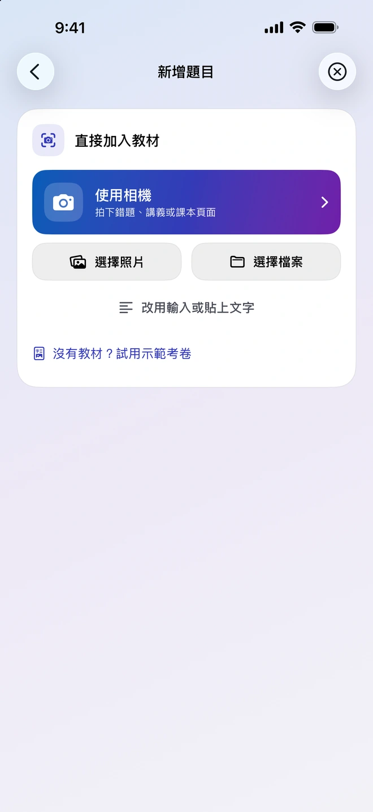
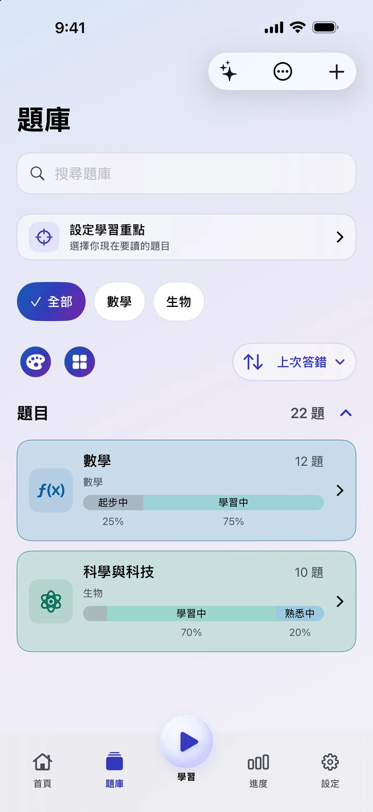
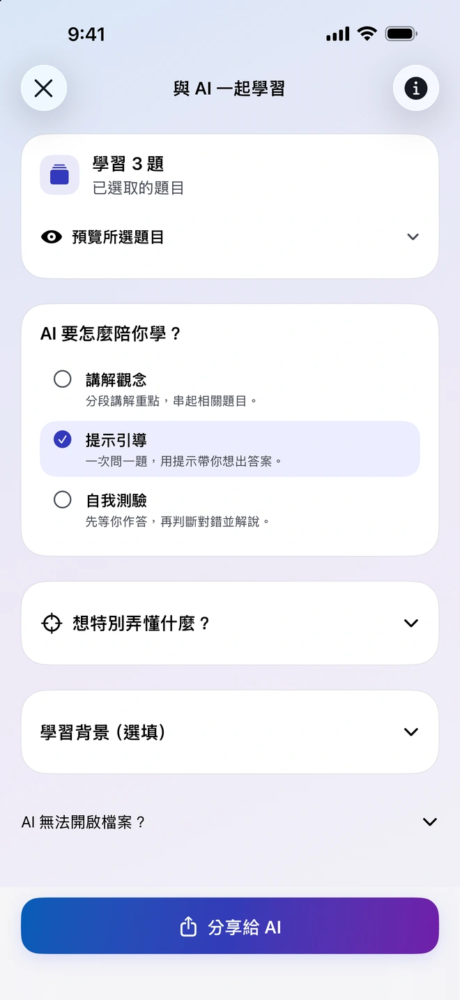
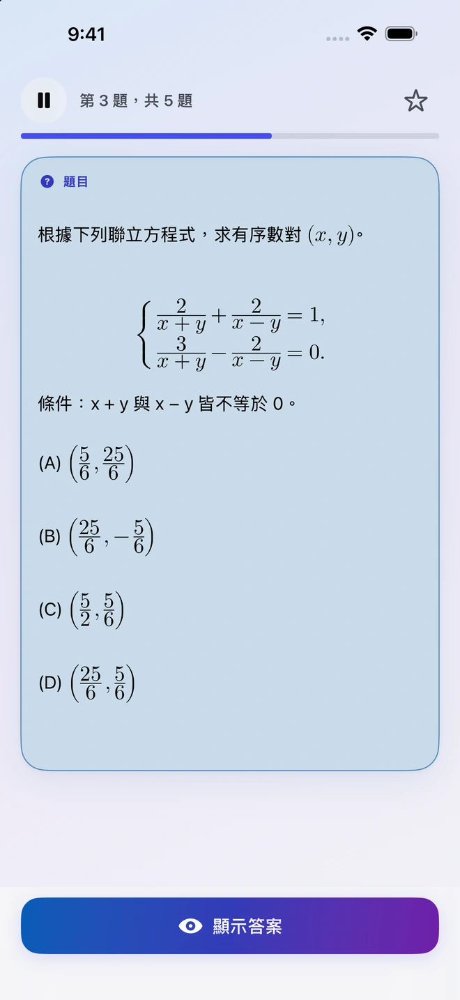
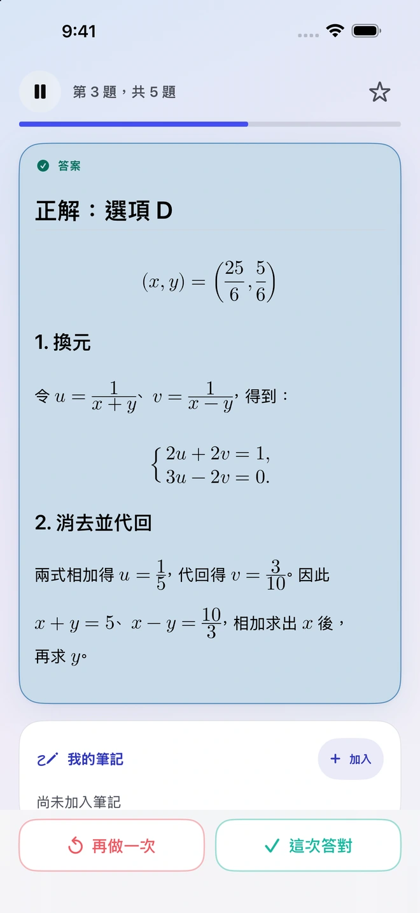
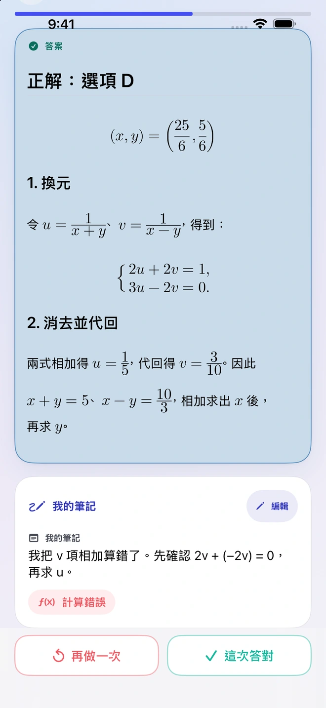
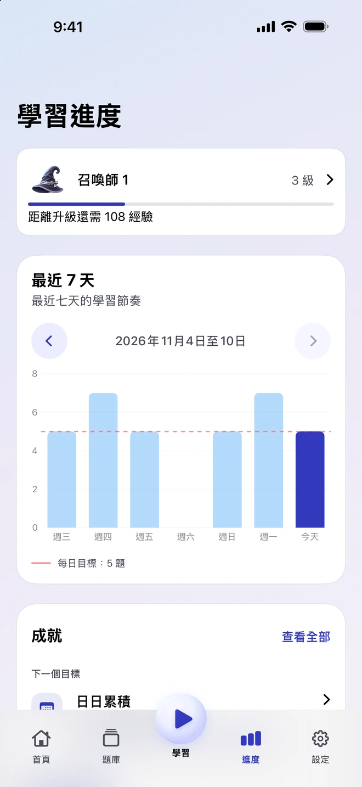

用手上的教材出題
加入照片、PDF、文件或筆記。Quiz Invoker 會整理教材和出題指示，讓你分享給選擇的相容外部 AI App。你可以檢查匯回的結果，再把想練的題目加入題庫。


收下真正想複習的題目，過幾天再回來看看自己還記得多少。
加入照片、PDF、文件或筆記。Quiz Invoker 會整理教材和出題指示，讓你分享給選擇的相容外部 AI App。你可以檢查匯回的結果，再把想練的題目加入題庫。
將選好的題目分享給你選擇的外部 AI App，請它講解觀念、一步一步給提示，或出題測試你的理解。要分享哪些檔案或筆記，由你決定。

先想好解法，再翻開答案並評估自己記得多少。答錯時，可以記下卡在哪一步，下次遇到同一題就能回顧。


七天進度會顯示最近的練習和每日目標。筆記會留在題目上，日後可以一起回顧答案和當時的想法。


整理題庫和練習可以離線進行，也不需要 Quiz Invoker 帳號。Quiz Invoker 在裝置上準備檔案和指示，實際的 AI 處理由你選擇的外部 App 負責。